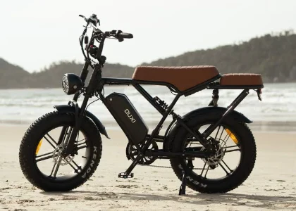

OUXI
Ouxi
Farol de LED no estilo retrô, para enxergar e ser visto na volta da praia no fim da tarde.
Fica encaixada no quadro, protegida e no centro da bike. Removível para carregar em casa: [A CONFIRMAR]
Pneus largos que seguram na areia batida e no asfalto, e amortecem o buraco antes dele chegar em você.
Disco nas duas rodas: frenagem firme mesmo na descida do morro com a mochila nas costas.
Banco comprido em couro marrom e garupa atrás para a mochila ou a sacola do mercado.
O motor soma força ao seu pedal: você chega ao trabalho sem suar, mesmo com vento sul de frente.
CuriosidadePneu fat roda na areia batida do Campeche sem afundar.
- Autonomia
- [A CONFIRMAR]
- Velocidade máx.
- [A CONFIRMAR]
- Motor
- [A CONFIRMAR]
- Bateria
- [A CONFIRMAR]
- Peso
- [A CONFIRMAR]
- Aro / pneu
- [A CONFIRMAR]